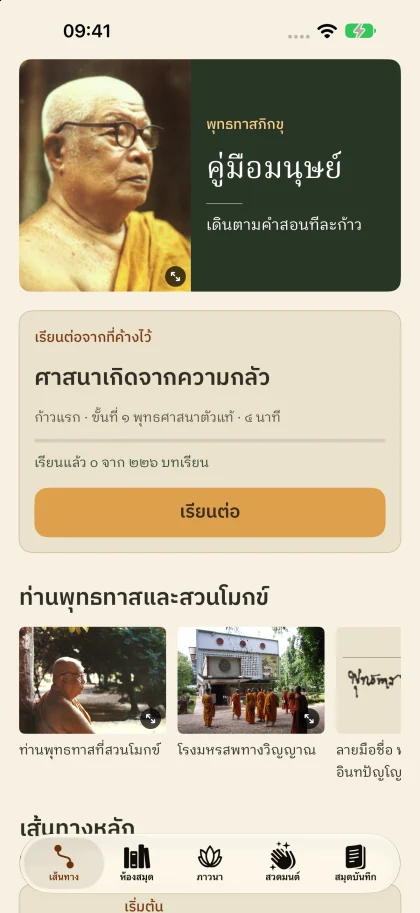
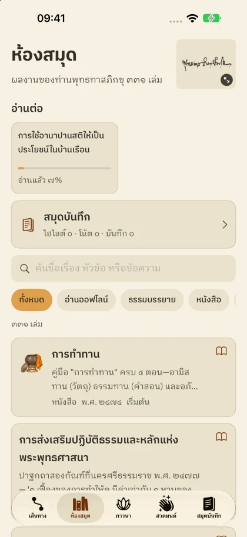
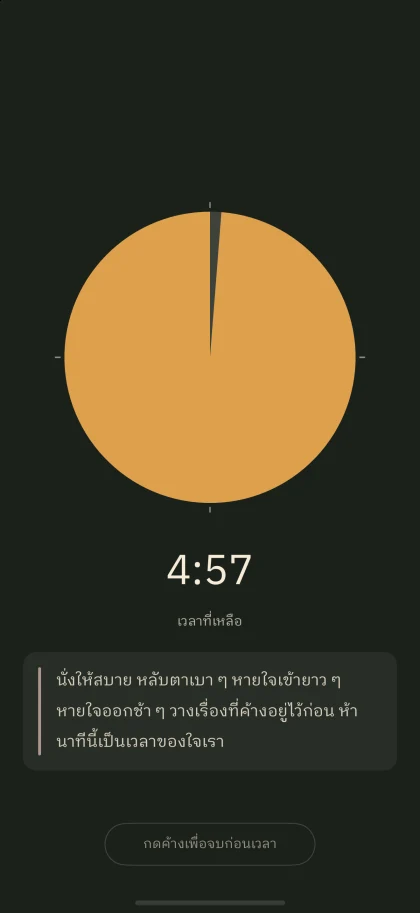
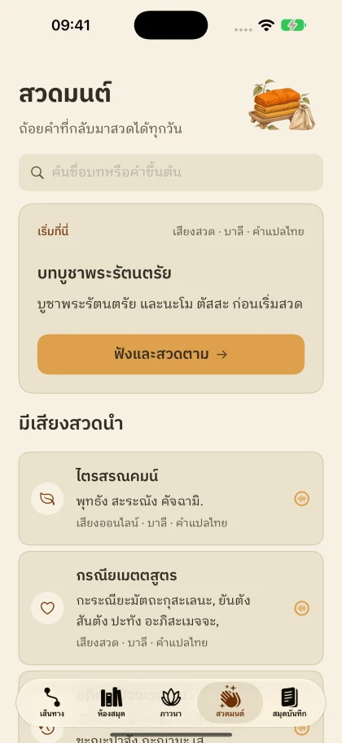

iPhone & iPad
ดาวน์โหลดเวอร์ชัน 2.0 ได้แล้วบน App Store เวอร์ชัน 2.1 ที่เพิ่มภาษาอังกฤษและเปลี่ยนชื่อหน้าร้านเป็น “คู่มือมนุษย์” อยู่ระหว่างรอ Apple ตรวจสอบ
เปิด App Storeพุทธทาสภิกขุ · สวนโมกข์
อ่านคำสอนของท่านพุทธทาสภิกขุ ลองปฏิบัติตามทีละน้อย แล้วจดสิ่งที่สังเกตได้ในชีวิตประจำวัน
ภายในแอป

เลือกอ่านจาก 14 เส้นทาง เริ่มบทสั้น ๆ แล้วกลับมาอ่านต่อจากเดิม

เปิดหนังสือได้ทั้ง 331 เล่ม อ่านออฟไลน์ได้ 328 เล่ม อีก 3 เล่มใช้อินเทอร์เน็ต ขีดเน้นข้อความและจดความคิดไว้ข้างบทอ่านได้

เลือกฝึกตามเสียงนำ 8 แบบ หรือตั้งเวลานั่งเงียบ ๆ วงกลมบอกเวลาที่เหลือ และเสียงระฆังช่วยบอกจังหวะเริ่มและจบ

เปิดบทสวด 32 บท อ่านตามทีละบรรทัด หรือฟังเสียงสวดในบทที่มีเสียงประกอบ

เลือกคำถามชวนคิดหรือเขียนอย่างอิสระ ย้อนอ่านสิ่งที่เคยจดไว้ และส่งออกบันทึกของตัวเองได้
อัปเดต 26 พฤศจิกายน 2569
ใช้งานฟรี ไม่มีโฆษณา และไม่ต้องสมัครบัญชีในแอป
ดาวน์โหลดเวอร์ชัน 2.0 ได้แล้วบน App Store เวอร์ชัน 2.1 ที่เพิ่มภาษาอังกฤษและเปลี่ยนชื่อหน้าร้านเป็น “คู่มือมนุษย์” อยู่ระหว่างรอ Apple ตรวจสอบ
เปิด App Storeเวอร์ชัน 2.0 (บิลด์ 8) เปิดทดสอบแบบปิด มีทั้งภาษาไทยและอังกฤษ หากได้รับเชิญ ให้ลงชื่อเข้าใช้ด้วยบัญชี Google ที่แจ้งไว้ กดเข้าร่วมทดสอบ แล้วจึงติดตั้งจาก Google Play
1. เข้าร่วมทดสอบ 2. ติดตั้งจาก Google Playไม่ปรากฏชื่อช่างภาพ เอื้อเฟื้อโดย Santikaro และ Liberation Park ปรับขนาดและครอบภาพสำหรับเว็บไซต์ Wikimedia Commons · CC BY-SA 3.0
แตะตัวละครหรือกด Enter เพื่อเปลี่ยนท่าเต้น